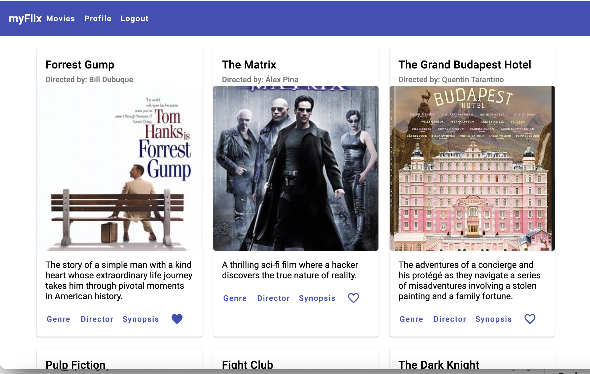

Project Description
MyFlixAngularClient is a responsive web application built with Angular that enables users to browse
movies, register, log in, and manage their profiles. The app connects to a backend API to retrieve
movie-related data, providing a seamless and interactive user experience.
Links
Hosted Version:
MyFlixAngularClient
GitHub Repository:
MyFlixAngularClient GitHub Repository
Technologies Used
- Angular (v18.2.10): For creating a dynamic and modular frontend
- Angular Material: Provides ready-made UI components to enhance user experience
- SCSS: Custom styles for a polished and responsive layout
- MyFlix API: Backend API to manage and fetch movie and user data
- TypeDoc: For generating documentation for Angular components and services
- GitHub Pages: Deployment platform for live access
Key Features
- User Authentication: Users can register, log in, and securely access the app’s personalized features
- Movie Browser: Browse and view detailed information about each movie, including genre and director
- Favorites Management: Add or remove movies from a favorites list for easy access
- Profile Management: Update personal details or delete the account directly from the profile
- Responsive Design: Optimized for both desktop and mobile devices to provide a seamless experience
Additional Project Materials
- Kanban Board: Used to plan and track the progress of key tasks, ensuring each
feature was implemented on schedule
- User Stories: Defined to prioritize functionalities that enhance user experience,
such as movie browsing and favorites management
- TypeDoc Documentation: Offers comprehensive documentation for developers who want
to understand or expand the app’s features
Project Highlights
- Deployment: Successfully deployed the project on GitHub Pages, providing easy access to users and
stakeholders
- Testing: Included unit tests for key components and end-to-end tests for user workflows
- Customizable Profile Options: The app supports profile management, allowing users to update details
and control their preferences
Screenshot
